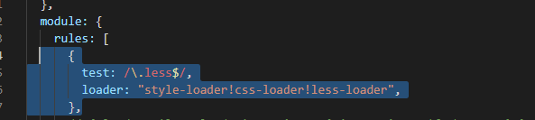

在vue项目中使用less原文出处:本文由博客园博主昭z提供。
原文连接:https://www.cnblogs.com/zzz-knight/p/11598843.html
1.安装 less 和 less-loader。
命令: npm install less less-loader --save-dev
2.打开 build/webpack.base.conf.js ，在 module.exports = 的对象的 module.rules 后面
添加一段：{test: /.less$/,loader: "style-loader!css-loader!less-loader" }

3.代码中的 style 标签中 加上 lang="less" 属性即可使用,或者通过@import引入.less文件